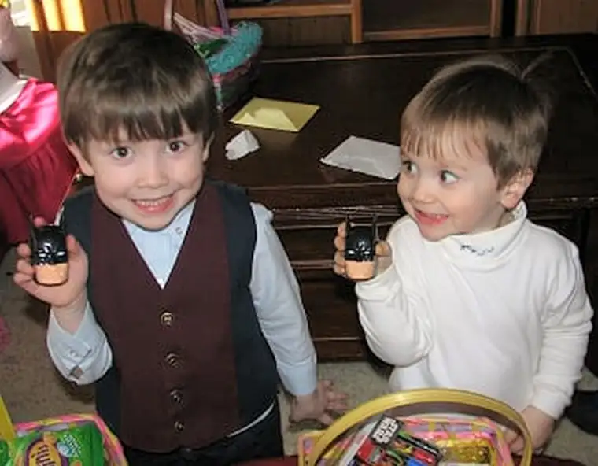
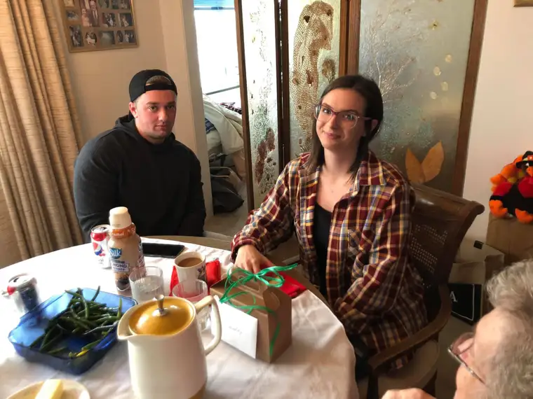
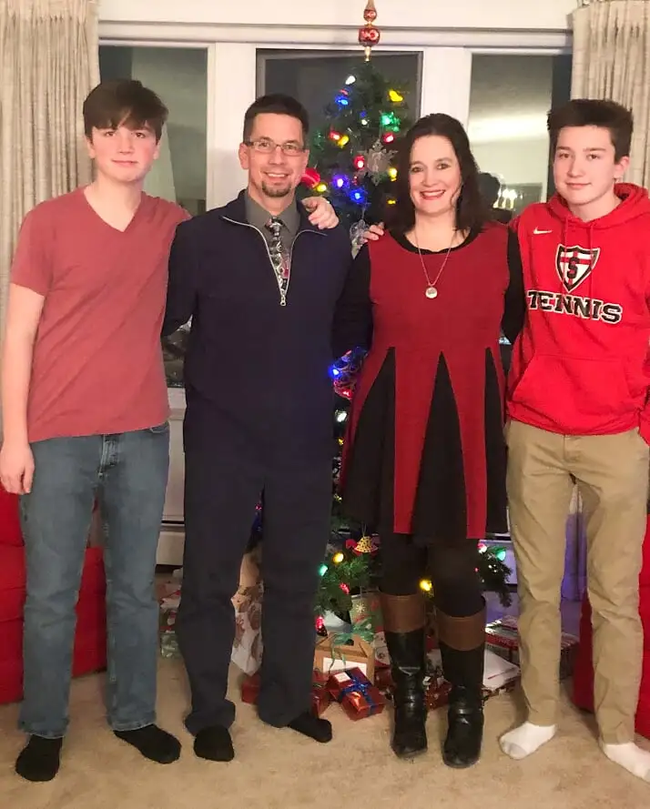
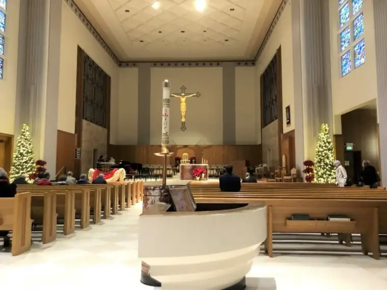
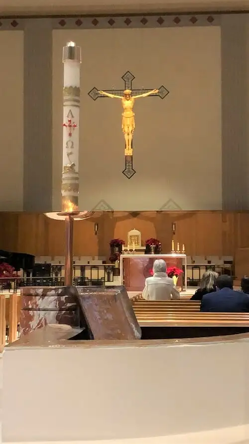
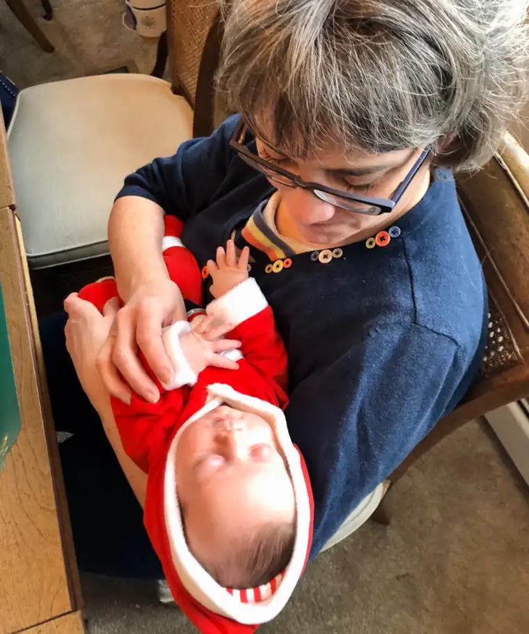
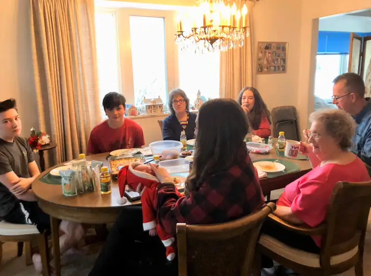
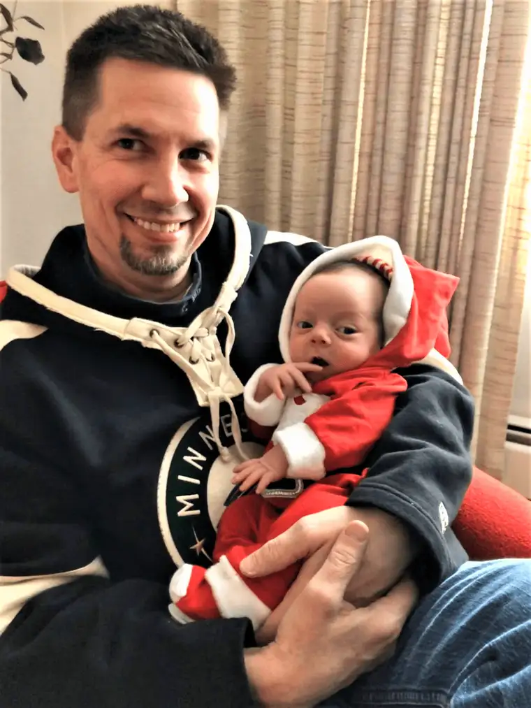

“The family of Nazareth is holy because it was centered on Jesus.”
Pope Francis
My practice of choosing “One Word” for the coming year began in 2008, the same year this blog launched as “Peace Garden Mama.” The first defining word I chose was, fittingly, “Awaken.” It was a new beginning, my foray into the blogging world, and also, into my work as a newspaper columnist. I’d recently won a national award for my second children’s book, “P is for Peace Garden: A North Dakota Alphabet,” and my writing was humming along nicely as I worked from home helping to raise our five children.

So much has changed since then. My youngest was a toddler in 2008; he’s now 14. All of his siblings were still home. Now, though only for a short time, we’ve got four hanging out in our roost, with our college girls hovering at the hearth just a while longer. Their older brother will be moving South soon, chasing the sun.

And their younger brothers? Well, instead of dinosaurs and diapers, Santa brought them shaving gel for their stockings this year. Somehow, our children have become women and men in the blink of a mother’s eye.

All this change, but I’m still hanging onto my One Word tradition, which I started thoughtfully with my friend Mary and continued earnestly with my friend Vicky, who had started her own “one word” practice before we’d met. While the blogging world also has changed much since my blog’s launch, I still find this space a helpful way to keep my thoughts well-oiled and place my ponderings, whether published elsewhere or freshly produced here. And I look forward each year to adding my “One Word” to the mix.
This year, however, I hemmed and hawed for weeks about my word for 2020. What a significant year this seems with such an even-keeled number. Initially, I thought it would make sense to have a word to pair with the number 2020. “Vision” was one that appealed. “Clarity” was another I thought could work. A few more possibilities entered into my discernment, but ultimately, the word finally made itself known to me: Family.

This word as my choice has two dimensions to it. One, broad, the other, very near to my heart.
On the broader realm, I was inspired by a homily given at the recent Feast of the Holy Family Mass at the Holy Spirit Cathedral in Bismarck, N.D. A young deacon named Christian Smith, who’s been studying in Rome and will be ordained in June, was given the honors of expounding on the readings for Dec. 29, here in this beautiful sanctuary I have come to see as a second spiritual home.

He talked about the trouble family is in these days — does anyone contest this? He also expressed a sentiment similar to the Holy Father, Pope Francis, that what makes a family holy, more than anything, is its dependence on God. Specifically, in Pope Francis’ words: “The family of Nazareth is holy because it was centered on Jesus.”

Such a simple sentiment from which we seem so far as a society. The same day, Bishop Robert Barron wrote, in his daily reflections, “When something other than mission is dominant — a son’s athletic achievement, a daughter’s success at university, etc. — family relationships actually become strained. The paradox is this: precisely in the measure that everyone in the family focuses on God’s call for one another, the family becomes more loving and peaceful.”

Or, as Pope John Paul II once said, and Barron reminds, the family is an ecclesiola, a “little church,” a place where God is worshipped and “where the discernment of God’s mission is of paramount importance.”
Do we realize how even in the most ordinary moments of being together, we are living out a holy calling?

Deacon Smith reminded us how young people tend to want to run away from their families of origin. He reminded us, too, that while we get to choose just about everything in life, including our friends, our careers, and what we want to eat, we don’t get to choose our families. Which makes it all the more imperative that we find ways to love them. We deceive ourselves, thinking if we just get far enough away from our wounded family members, we can start fresh, be our own, self-made person. We don’t realize at times that the very people God has placed us with are the ones who will lead us to heaven. Yes, even in all their imperfections. In fact, because of them.
If we can’t love our families with all of their flaws, what chance do we have of loving others with whom we don’t share these same primal bonds? Maybe we could begin looking at our family differently. Maybe they are not something to run from, but the people we should be running to on our way to God?

With family in such crisis on that broad level, focusing on family seems right. To that end, I want to spend my year finding ways to be a conduit of love for those struggling, to figure about how I can contribute more positively both within my own family and the wider human family in all our brokenness
2020 follows a horrendous year of critical health scares and other crises for our family. God showed us, in 2019, that he wants us intact, wants us living, wants us here and together, to keep leading one another to heaven, here on earth.

We ended this year on a hopeful note, with the birth of my niece’s firstborn son, and with two additional little ones who will be born in 2020 to my cousins Nick and Joe. God is blessing our family in abundance through these little lives who will unleash love to us all in a whole new and unique way! Rejoice!

Given all this, my commitment for 2020 is to be a better mother, wife and friend. To be a force of love, peace and joy whenever possible. To seek the Lord above all so that I might more capably help bring myself and our whole family closer to heaven, where we will hopefully enjoy eternal communion with our Lord, forever, someday. It is a lofty mission, I know, but God willing, may it be fulfilled!
What word will lead you into the hope-filled year of 2020, and why?
Below, find my “One Word” post from last year.